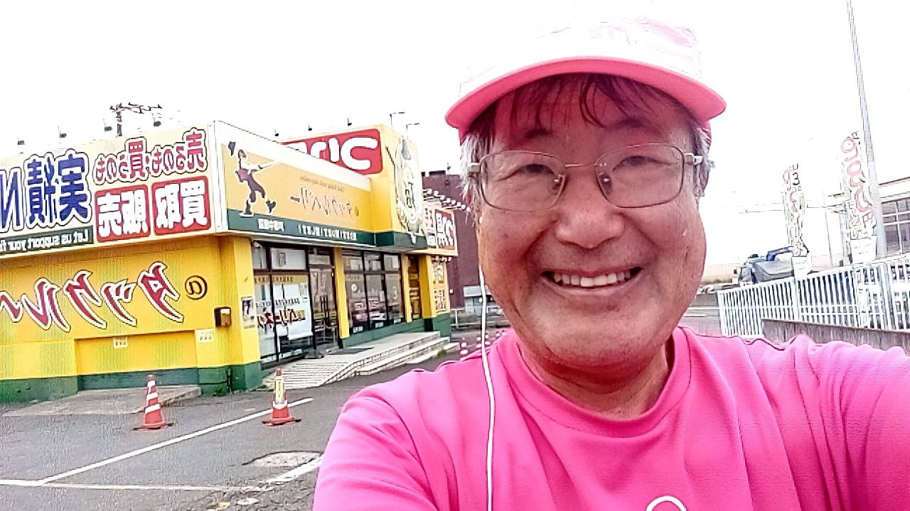
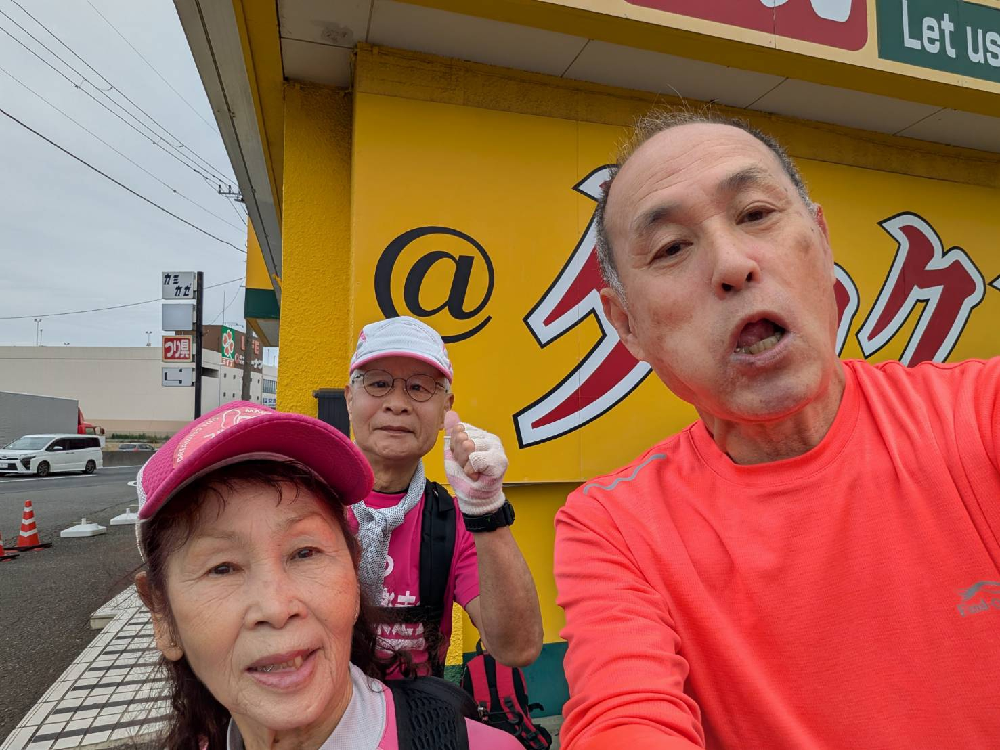
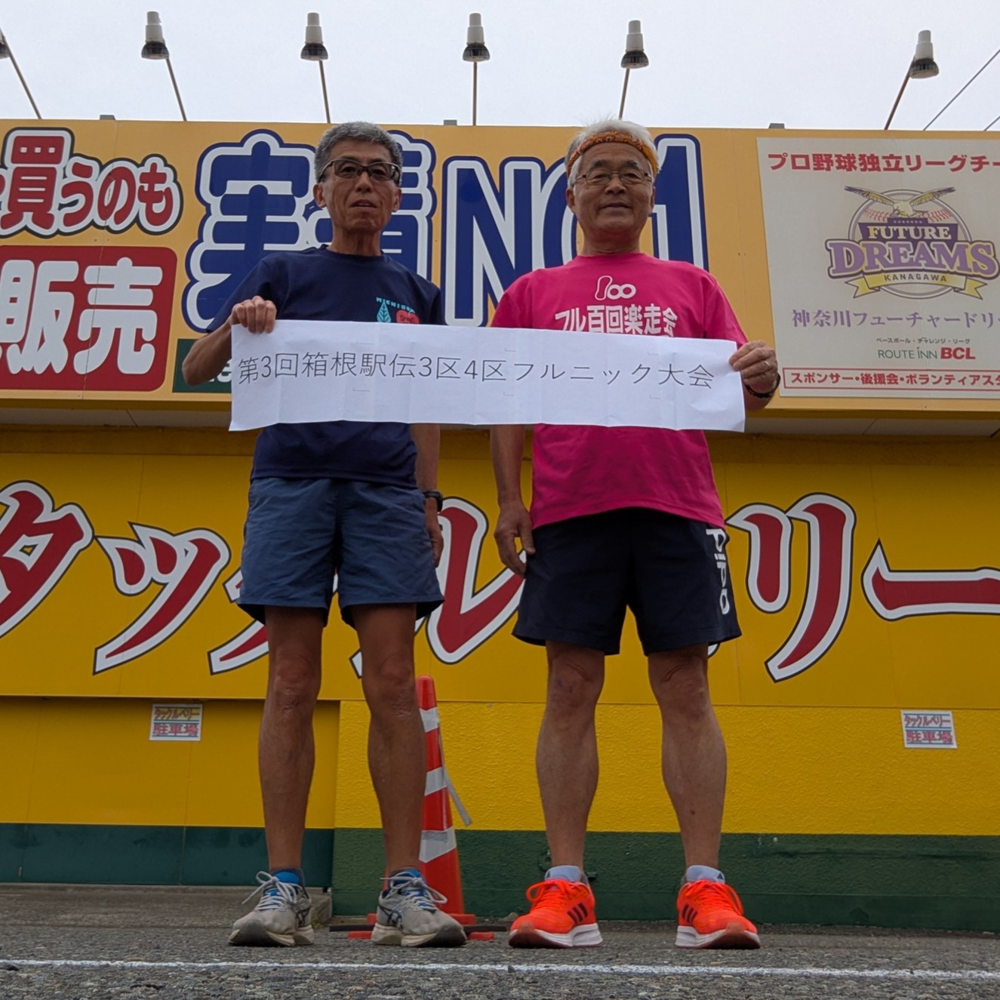
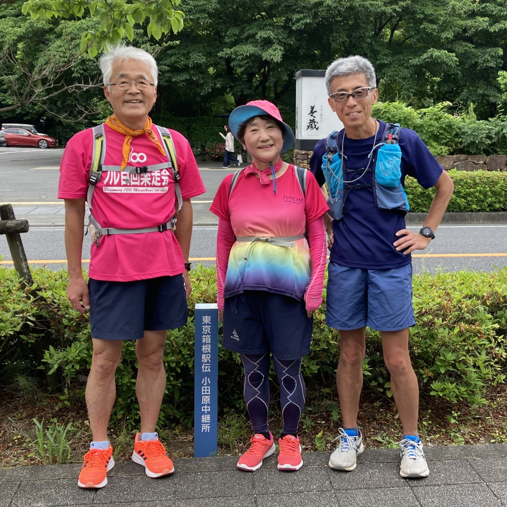

2025-05-24 11:09:27
2024年5月24日（土）戸塚中継所～小田原中継所（神奈川県）曇り 18℃（８時）担当（山口）
| 順位 | 氏名 | タイム |
|---|---|---|
| 1 | 福井康太 | 6時57分51秒 |
| 2 | 山口義治 | 6時57分51秒 |
| 3 | 島田八十美 | 8時05分01秒 |
| 4 | 大野清美 | 9時17分13秒 |
| 5 | 瀬戸君子 | 10時46分17秒 |
| 6 | 石井 功 | 10時46分17秒 |
| 松島八十子（応援参加） |

スタート写真①（大野さん）

スタート写真②（瀬戸さん、島田さん、石井さん）

スタート写真③（山口会長、福井）

ゴール写真（含む松島さん）